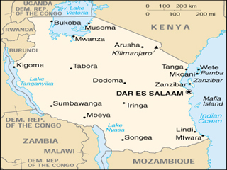

|

|
LIKIZO YA SHULE YA SEKONDARI. Nuru na Kombo ni wanafunzi wa shule za sekondari. Wao wanasoma mikoa tofauti. Nuru anasoma shule ya bweni ya Mkonge katika mkoa wa Tanga, na Kombo anasoma shule ya bweni ya Msufini katika mkoa wa Morogoro. Wao wanakutana Dodoma , wote wapo likizo. Kombo: Hujambo Nuru? Nuru: Sijambo Kombo. Habari za Morogoro? Kombo: Nzuri tu. Habari za Tanga? Nuru: Salama tu. Vipi mitihani ilikuwaje? Kombo: Mitihani ilikuwa mizuri. Bado nasubiri matokeo, na wewe je? Nuru: Haikuwa mibaya sana, na mimi pia bado nasubiri matokeo. Kombo: Mkifungua shule utaingia kidato cha ngapi? Nuru: Nitaingia kidato cha nne, na wewe je? Kombo: Nitangia kidato cha tatu. Vipi uko tayari kwa masomo ya kidato cha nne? Nuru: Nipo tayari kabisa, na nitaanza kujiandaa na mtihani wa Taifa mara tu tukifungua shule. Kombo: Vyema, ninakutakia kila la kheri. Nuru: Asante. Kombo:Ninyi shuleni kwenu mnavaa sare za rangi gani? Nuru: Wasichana wanavaa sketi za kijani na mashati meupe, na wavulana wanavaa suruali za khaki na mashati meupe. Kombo: Sisi shuleni kwetu wasichana wanavaa mashati meupe na sketi nyeusi, na wazulana wanavaa suruali za khaki na mashati meupe. |
© African Studies Institute, University of Georgia.